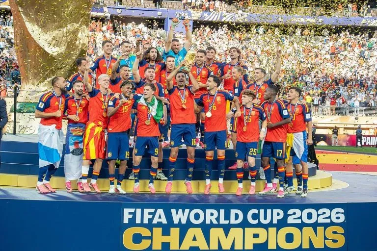
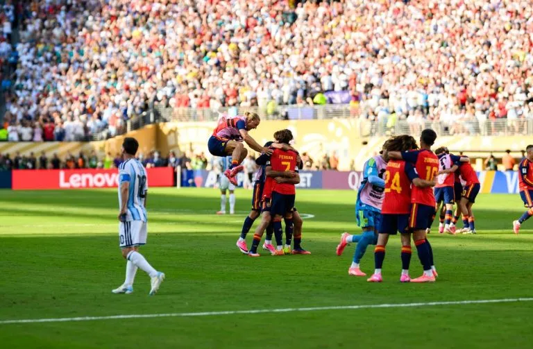

Spain Wins World Cup & Kerr Breaks Mile Record
Today, NewsForKids.net looks at two major sports stories. Spain defeated Argentina to win the 2026 FIFA World Cup. And British runner Josh Kerr broke a 27-year-old world record for the fastest mile (1.6 kilometers).
Spain is the Winner of the Largest World Cup Ever
After 39 days, the largest FIFA World Cup ever has come to a close. In a tense match on Sunday, Spain defeated the previous world champions, Argentina, 1-0 in extra time.
This year’s World Cup was held across Canada, Mexico, and the United States. It included 48 national teams – up from 32. To allow time for all 104 matches, the tournament lasted several days longer than it has before.

In a tense match on Sunday, Spain defeated the previous world champions, Argentina, 1-0 in extra time. Though the score looks close, Spain was the stronger team all through the match. Above, Spain’s team lifting the World Cup trophy after their victory over Argentina on Sunday.
(Source: Bryan Berlin [CC BY-SA 4.0], via Wikimedia Commons.)
In spite of the many challenges of holding a long, hard soccer (football) contest during a hot North American summer, in general, things ran smoothly.
By Sunday the contest had come down to two teams, Spain and Argentina. In some ways, it was a test of youth against age.
Spain had two 19-year-olds playing for it, including Lamine Yamal, the third youngest player to play in a World Cup final. On the other side was Argentina’s Leo Messi, considered by many to be the greatest player of all time. At age 39, this was likely to be Messi’s final World Cup match.

Spain had two 19-year-olds playing for it, including Lamine Yamal, the third youngest player to play in a World Cup final. For Argentina’s Leo Messi, age 39, this was likely to be his final World Cup match. Above, Messi (left) walks away as Spanish athletes celebrate their win.
(Source: Daniel Torok/White House [Public Domain], via Wikimedia Commons.)
Though the final score looks close, Spain was the stronger team all through the match. Spain had control of the ball about 65% of the time, and took 20 shots, compared to Argentina’s 2. The deciding goal came from Spain’s Ferran Torres in the 106th minute of the match.
Since Spain’s female team won the Women’s World Cup in 2023, Spain now holds both world titles.
Josh Kerr Sets New World Record for Fastest Mile
On Saturday, Josh Kerr set a new world record for the fastest man to run one mile (1.6 kilometers). The British athlete covered the distance in 3 minutes and 42.66 seconds, beating the previous record held by Hicham El Guerrouj. El Guerrouj’s record, set in 1999, had been unbroken for 27 years.
Kerr set the record at a Diamond League meet in London. He wore an outfit specially designed for him by Brooks, a company that makes athletic gear. He started the run with two pacers – athletes who were running just to make sure that Kerr was going fast enough early in the race.
Breaking the record is something that Kerr has been focused on for a year. He announced his goal back in March. And every day, he has been writing his goal time (3:42) into his notebook.
Kerr believes in hard work. He often trains in the mountains near Albuquerque, New Mexico, where the air is thinner. “I’m not here to get famous,” he says. “I’m here to race.”
Even so, Kerr is now quite famous. Kerr has won Olympic medals and athletic World Championships before. But the record for the mile is considered special by many.
Kerr beat the old record by nearly a half a second, and finished 2.68 seconds faster than his own previous best time. Sebastian Coe, the president of World Athletics, and also an Olympic gold medalist, described Kerr’s run as “absolutely incredible”.